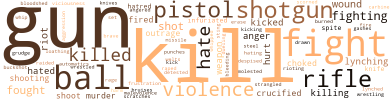
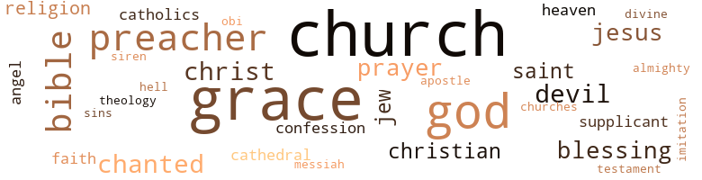

Black Jacob, by Mahoney, William (1969)
91 music-related terms matched in this text.
Most frequent terms in this topic: music (10); section (7); sang (7); chanted (6); dance (5)
bump.v.03
Definition: dance erotically or dance with the pelvis thrust forward
| word | sentence |
|---|---|
| bumped | They bumped past the Elks Hall , a deserted-looking building with its belfry tall in the sky . |
chapter.n.01
Definition: a subdivision of a written work; usually numbered and titled
| word | sentence |
|---|---|
| chapter | He could remember when NAACP meetings were conducted in secret and the six succes - sive presidents of the Mississippi chapter had been assassi - nated . |
chorus.n.01
Definition: any utterance produced simultaneously by a group
| word | sentence |
|---|---|
| chorus | " FREEDOM , " a chorus of strong voices shouted . |
croon.v.01
Definition: sing softly
| word | sentence |
|---|---|
| crooned | " I want to love you like nobody 's loved you come rain or come shine ... " she crooned , low and deep and soft . |
dance.n.01
Definition: an artistic form of nonverbal communication
| word | sentence |
|---|---|
| dance | Of the three couples that were dancing - most of the dancers were young teachers and danced a carefully stylized version of the latest dance which was , despite its dilution , powerful , but devoid of its necessary sexuality - the most interesting couple was Mrs. Grace and a young fellow who worked for the federal government . |
| dance | A circle of people formed around Jacob , Allemenia , Strop and Sam Jones , who hoped he could finish the dance . |
| dance | Cliffords began danc - ing alone , a dance of the soul in harmony with the body , hands , eyes and arms striking religious poses never recorded by a painter , movements of the stomach and hips that spoke of love for his own black self . |
| dances | Old men , infants , housewives , schoolchildren , workers all stopped to dance to the music usually reserved for dances and parties . |
dance.v.02
Definition: move in a pattern; usually to musical accompaniment; do or perform a dance
| word | sentence |
|---|---|
| dancing | Sam reached out and grabbed Mrs. Strop * as she was passing and began dancing with her . |
dance.v.03
Definition: skip, leap, or move up and down or sideways
| word | sentence |
|---|---|
| danced | Of the three couples that were dancing - most of the dancers were young teachers and danced a carefully stylized version of the latest dance which was , despite its dilution , powerful , but devoid of its necessary sexuality - the most interesting couple was Mrs. Grace and a young fellow who worked for the federal government . |
| dance | " I can remember when you had to ask a man to dance with your wife or escort , " he said . |
| Dancing | Blasting from the loudspeaker as they drove down Mangrum Street was the big " J. B. " Dancing on the side - walks as they drove past were schoolgirls , people waiting for buses and those milling around the barber shop , candy stores and gas stations . |
| dance | Old men , infants , housewives , schoolchildren , workers all stopped to dance to the music usually reserved for dances and parties . |
| danced | The two crowds joined and the people danced in the streets and shouted as they urged others along the side of the road to join in . |
| danced | Puddin ' would change his clothes and cut the grass , pull up weeds in flower beds and throw trash into a wire basket where flames danced about and paper turned into smoke . |
| dancing | The slippery soap smelled like bright yellow flowers with fat bumblebees dancing about them . |
kettle.n.04
Definition: a large hemispherical brass or copper percussion instrument with a drumhead that can be tuned by adjusting the tension on it
| word | sentence |
|---|---|
| kettle | Widow Sanders shuffled about the kitchen in tired slippers , chattering to herself in the shack 's steaming hot room where shiny quart bottles stuffed with tomatoes were lined on the sink and a large pot of tomatoes boiled on the stove next to a pot of sparkling empty jars and a kettle of sweet potatoes . |
| kettle | Puddin ' asked , pecking into the kettle of yams . |
| kettle | Before anyone could answer he grabbed the kettle and was walking out the door with it . |
| kettles | An image flashed in Jacob 's mind of times he 'd gone to the plantation with his mother when they 'd had giant black kettles of apples boiling on fires in the yards . |
kick.v.04
Definition: kick a leg up
| word | sentence |
|---|---|
| kick | Like they supposed to see you can find another house before they kick you out . |
music.n.01
Definition: an artistic form of auditory communication incorporating instrumental or vocal tones in a structured and continuous manner
| word | sentence |
|---|---|
| music | Out of the corner of his eye he noticed her head bouncing in time with the car radio music . |
| music | " What is the God-awful sound on the radio ? " he asked her , trying to break into her consciousness and realizing that her mind was in tune with the music . |
| music | Jacob opened his front door and was struck with the jumping sound of party music and the spectacle of twenty people shout - ing , dancing and playing . |
| music | Each battered door Jacob passed on the damp brown street that smelled of cooking , disinfectant and rotting wood , hummed with music or loud talk . |
| music | The music had started and the people were packing in . |
| music | Old men , infants , housewives , schoolchildren , workers all stopped to dance to the music usually reserved for dances and parties . |
| music | The music stopped as he said , " Look at those cops . " |
| music | The music that made her cry and pat her feet . |
| music | Frailty tiptoed across the rug behind Bernard 's secretary , who announced him in a soft voice barely louder than the air - conditioner and the piped music . |
| music | In the clinic someone turned on a portable radio and music bounced from the walls . |
musical_instrument.n.01
Definition: any of various devices or contrivances that can be used to produce musical tones or sounds
| word | sentence |
|---|---|
| instruments | Jacob looked at the little bandstand in the back room where several musicians lethargically went about setting up their instruments . |
| instruments | Then there were the technicians ; the cameramen with the big black bags full of instruments . |
| instruments | The whites controlled the instruments of truth-making ; the radios and TVs . |
piano.n.01
Definition: a keyboard instrument that is played by depressing keys that cause hammers to strike tuned strings and produce sounds
| word | sentence |
|---|---|
| piano | Arranged almost as though someone had set up house on the edge of the county road sat a coal stove blackened with a thick crust of burnt drippings , a double-bed mattress , a box bedspring , a bureau with a mirror lying detached beside it , an old grand - father clock and a upright piano that had an empty space in it where a piano roll might once have fit . |
| piano | Arranged almost as though someone had set up house on the edge of the county road sat a coal stove blackened with a thick crust of burnt drippings , a double-bed mattress , a box bedspring , a bureau with a mirror lying detached beside it , an old grand - father clock and a upright piano that had an empty space in it where a piano roll might once have fit . |
| piano | Doc seemed to be asleep on the bass , Charlie thumped at the bass pedal and Dan fiddled with the electric amplifier hooked up to the piano . |
| piano | When the band started to play , Jacob noticed that one of the white fellows in the place was on the bandstand with a golden horn , marching along with the piano , doing a tune called " Stereophonic . " |
| piano | The room , choked full of folk from Newtown , Paces Ferry , Blandtown and some from as far away as Griffith , filled with smoke and nervous people taut as piano wire with the knowl - edge that the town was burning . |
pipe.n.04
Definition: a tubular wind instrument
| word | sentence |
|---|---|
| pipe | 1 ate , who had a fatherly streak of gray in his hair , slowly smoked a pipe and had about him the cold air that always surrounds violent men . |
| pipe | " Smokes a little pipe with molasses ' bacca . |
| pipes | Sundown brought movement of trucks packed with workers and silent huddles of people moving along the road heading to their stingy meals , movement of children running from the goblin-filled night to parents ' homes , of well-fed people racing along the highway in big cars , of lone men in thick coats and tweed caps walking along the road smoking pipes like little chimneys . |
| pipes | It was one of the best smells he knew ; a mixture of liquor , aged wood , pipes and cigars and a damp unnameable cool smell . |
| pipes | Workingmen walked comfortably down the road smoking their after-dinner pipes with smoke rising from them like little chim - neys . |
promenade.n.01
Definition: a formal ball held for a school class toward the end of the academic year
| word | sentence |
|---|---|
| prom | Some menfolk prom - ised to hep , but did n't show up today . " |
rhythm.n.04
Definition: the arrangement of spoken words alternating stressed and unstressed elements
| word | sentence |
|---|---|
| rhythm | I do n't blame him for loving them , but let me have ' children that he may love me . . . " Leah did n't bother to follow the Latin words of the priest in the book of translations but was filled with the rhythm of the ancient words . |
| rhythm | Puddin ' thought of the time years ago when he 'd worked at the warehouse , the darkness of the trailers and trains where he sank his baling hook into box after box , pulling them onto his shoulder and flipping them onto a pallet until he 'd fallen into a rhythm and did n't have to think as his body joined with the other sweating bodies slaving in the darkness . |
| rhythm | By the time lie reached his house there was a rhythm of gunfire sounding in the town ; the shotguns boomed , boomed , boomed , the single shot rifles went bap , bap , bap . |
| rhythm | You know the story of Jesus ? " he asked with a staccato rhythm above all the shouting . |
scat.n.01
Definition: singing jazz; the singer substitutes nonsense syllables for the words of the song and tries to sound like a musical instrument
| word | sentence |
|---|---|
| scat | A hundred boy scouts were camped on the northeast steps of the courthouse safely under the portico waiting to be led through the county scat . |
| scat | Curt switched around uncomfortably on the scat and looked out the back window of the truck . |
section.n.01
Definition: a self-contained part of a larger composition (written or musical)
| word | sentence |
|---|---|
| section | At St. Puce 's she acted outraged to find that the driver would charge her two dollars , but after paying him she asked him to wait for she would have been frightened to be in that section of town without transportation . |
| section | In the section of town called Newtown , on the street called Pearl , Jacob entered the pool hall . |
| section | But when he got to the Negro section of town he breathed easily and knew it was true - he was free at last . |
| section | The children had pasted the news section in his room where he 'd always strictly directed them to paste nothing but the society section for Tina and the comics for him . |
| section | The children had pasted the news section in his room where he 'd always strictly directed them to paste nothing but the society section for Tina and the comics for him . |
| section | We need some people from your section of town to drive voters to the polls and to poll watch , " he told Frailty . |
| section | And the whites had called Camp Grove , his section of town , Nigger Town . |
sing.v.02
Definition: produce tones with the voice
| word | sentence |
|---|---|
| sang | " Da , da , da , dadadada , " Laura sang with a record on the radio , snapping her fingers in utter disrespect and shaking her head and shoulders about like a palsied person . |
| sang | " Too much luv , too much luv , nothin ' kills a nigger like too much luv ... " he sang . |
| sing | " Nobody can sing like Rose , " Jacob said . |
| sing | Everybody in the place stopped and listened to the large woman with the beau - tiful face in the spotlight , sing love songs , sorrow songs and snappy pop tunes . |
| sang | Not a glass clinked while she sang . |
| sang | Only prayer will bring about ... " Jacob tuned to a station where a gospel group sang , " Satan , we 're going to tear your kingdom down ... " " You getting up ? " |
| sing | As the black bespectacled deacon shouted , " Yes Lawd , " a sister started to sing , " Were you there when they crucified ma lawd ? |
| sang | Next to her Elizabeth sat swinging her arms and , oblivious to everyone in the room , sang , " Who 's goin ' down in der grave wid me ? |
| sang | That 's where the darkies play , " Judge Marshall Clayton sang in his chamber . |
| sang | " Way down south in the land of cotton , old times there are n'er forgotten , look away , look away , look away , Dixieland , " Clayton sang , driving his old black Cadillac toward the Hofstra Training School for Girls . |
singing.n.01
Definition: the act of singing vocal music
| word | sentence |
|---|---|
| singing | They clapped their hands while singing . |
| singing | " Rose is singing , " Jacob said , turning to watch the vocalist , seeming not to hear Schneider . |
| singing | When the singing stopped and the hooting and clapping died down Schneider asked Jacob for an appointment . |
| singing | After the singing died and the shuffle of people sitting down had stopped , Grace said , standing like a stone figure before the enraptured crowd , " Let us pray . " |
song.n.01
Definition: a short musical composition with words
| word | sentence |
|---|---|
| songs | Everybody in the place stopped and listened to the large woman with the beau - tiful face in the spotlight , sing love songs , sorrow songs and snappy pop tunes . |
| songs | Everybody in the place stopped and listened to the large woman with the beau - tiful face in the spotlight , sing love songs , sorrow songs and snappy pop tunes . |
tambourine.n.01
Definition: a shallow drum with a single drumhead and with metallic disks in the sides
| word | sentence |
|---|---|
| tambourine | Somewhere on the street , behind another door , a tambourine thumped and rang , thumped and hissed , chimed and hissed . |
tone.v.01
Definition: utter monotonously and repetitively and rhythmically
| word | sentence |
|---|---|
| chanted | " Amen , " the diners chanted . |
| chanted | And at another door he heard , " Little Sally Waters sittin ' in a saucer , rise Sally rise , " as the children 's voices chanted in unison . |
| chanted | The girls nodded hello with awful respect and chanted in singsong voices , " Hello , brother Bo . " |
| chanted | Brad Wilson chanted like at a football game . |
| chanted | " Tell it , " the people chanted . |
| chanted | " All stand , " the bailiff chanted . |
tune.n.01
Definition: a succession of notes forming a distinctive sequence
| word | sentence |
|---|---|
| tune | " What is the God-awful sound on the radio ? " he asked her , trying to break into her consciousness and realizing that her mind was in tune with the music . |
| line | Even though I pass along a line drawn through the darkest reaches of insanity where lesser lights extinguish themselves . |
| lines | When the whites changed the places of registration for voters , Jesse had found them and had lines of Negroes waiting for them to open the next day . |
| tune | When the band started to play , Jacob noticed that one of the white fellows in the place was on the bandstand with a golden horn , marching along with the piano , doing a tune called " Stereophonic . " |
| tunes | Everybody in the place stopped and listened to the large woman with the beau - tiful face in the spotlight , sing love songs , sorrow songs and snappy pop tunes . |
| line | So people now thought that he was from a long line of criminals and a danger to the town 's women ? |
whistle.n.01
Definition: the sound made by something moving rapidly or by steam coming out of a small aperture
| word | sentence |
|---|---|
| whistles | And then the Major , lifting up his hand to give his words force , said to the messenger : " Tell them the muscles in my legs are not trained for running , tell them I have stood the fire and heard the whistles of minie balls from a thousand Yankee rifles , and I am not frightened by this crowd . " |
whistle.v.01
Definition: make whistling sounds
| word | sentence |
|---|---|
| whistle | In the brief silence the ten o'clock train whistle blew forcing upon everyone at the table the frightening recognition that another day had passed . |
| whistle | Suddenly a whistle blew . |
| whistle | As night thrust toward Matchez , an undulating whistle sounded over in Louisiana of the kind that might call a spectral army to rise . |
273 violence-related terms matched in this text.
Most frequent terms in this topic: kill (21); fight (20); gun (18); balls (9); violence (9)
abhorrence.n.01
Definition: hate coupled with disgust
| word | sentence |
|---|---|
| loathing | " I 've seen you two sneaking off to be alone , " Ethel said with loathing . |
abrasion.n.01
Definition: an abraded area where the skin is torn or worn off
| word | sentence |
|---|---|
| scratches | She fetched a bowl , an antiseptic and a towel and started to clean up the scratches on Jesse 's face and hands . |
aggression.n.01
Definition: a disposition to behave aggressively
| word | sentence |
|---|---|
| aggression | This was good , for he believed that as the men of a race should know the value of aggression , the women should know the value of charity . |
anger.n.01
Definition: a strong emotion; a feeling that is oriented toward some real or supposed grievance
| word | sentence |
|---|---|
| anger | Jacob felt relieved as he became certain of the game and his anger mounted . |
| anger | Jacob would never remember how he got from his mother 's room downstairs to his study for his mind was charged with anger . |
| anger | Violent anger rose to a peak within Puddin ' but was quickly turned inward . |
| anger | Then the anger turned into fear of the attack he could n't answer . |
anger.v.02
Definition: become angry
| word | sentence |
|---|---|
| angered | Puddin ' looked at the yellowing newspaper society pages pasted over his head with flour and water and the comic pages on the opposite wall and was angered to see several new addi - tions . |
automatic_rifle.n.01
Definition: light machine gun
| word | sentence |
|---|---|
| automatics | But automatics had n't been perfected in his day . |
bird_shot.n.01
Definition: small lead shot for shotgun shells
| word | sentence |
|---|---|
| buckshot | The man rested his hand on the shoulder of one of the people from the rurals who 'd come into town when news of the riot spread and somehow caught some buckshot . |
bleeding.n.01
Definition: the flow of blood from a ruptured blood vessel
| word | sentence |
|---|---|
| bleeding | Jesse pointed to the statue of the bleeding thin man crucified on the cross on the wall . |
bloodshed.n.01
Definition: the shedding of blood resulting in murder
| word | sentence |
|---|---|
| bloodshed | " Do n't ya think it 's about time we put a stop to all this needless destruction and bloodshed ? " |
bruise.n.01
Definition: an injury that doesn't break the skin but results in some discoloration
| word | sentence |
|---|---|
| bruises | Jacob touched Jesse 's wrists and as the arm was jerked back he noticed welts and bruises . |
burn.v.08
Definition: burn at the stake
| word | sentence |
|---|---|
| burned | She was no longer the wild tomboy who burned barns and stole his liquor for fun and who outran , outate , and outlied men twice her age . |
carbine.n.01
Definition: light automatic rifle
| word | sentence |
|---|---|
| carbine | Hanging from a rope sewn into the jacket was a carbine with a long sixteen-shot clip . |
contemn.v.01
Definition: look down on with disdain
| word | sentence |
|---|---|
| despised | Jacob shuddered to think of what the man taught pupils at Carver High School for , although he was a knowledgeable student of English literature and could quote the masters , he despised his people and his own black self . |
| scorned | Jesse frowned and said , " We 've been bilked and scorned too long . " |
crucify.v.01
Definition: kill by nailing onto a cross
| word | sentence |
|---|---|
| crucified | Pretending to fish in the gutter with worms crucified on bobbypins and tied to sticks with twine , children were fascinated by the dirty stream run - ning beside the road . |
| crucified | As the black bespectacled deacon shouted , " Yes Lawd , " a sister started to sing , " Were you there when they crucified ma lawd ? |
| crucified | Jesse pointed to the statue of the bleeding thin man crucified on the cross on the wall . |
cut.n.05
Definition: a wound made by cutting
| word | sentence |
|---|---|
| gashes | Jacob hung up and began to operate , digging out shotgun pellets and sewing up gashes and torn skin . |
draw.v.23
Definition: pull (a person) apart with four horses tied to his extremities, so as to execute him
| word | sentence |
|---|---|
| drawn | Three times the noose was placed around his neck and the Negro was drawn up off the ground ; three times he was let down with a warning that death was in store for him should he fail to confess his complic - ity in the Cranford murder . |
duel.v.01
Definition: fight a duel, as over one's honor or a woman
| word | sentence |
|---|---|
| dueling | At that time the colonels ' characteris - tic insignia consisted of a brace of dueling pistols , a plug of chewing tobacco , an overwhelming desire to hunt , fight or make love to some woman and a quart of bourbon whiskey . |
erase.v.01
Definition: remove from memory or existence
| word | sentence |
|---|---|
| erase | He had won , Bernard thought , for he had stood there too long without answering already and a pistol whipping could n't erase the fact that he 'd already stood there too long . |
ferociousness.n.01
Definition: the trait of extreme cruelty
| word | sentence |
|---|---|
| viciousness | Although he had calculated the potential for viciousness of his friends , he had n't realized how far it went . |
fight.n.02
Definition: the act of fighting; any contest or struggle
| word | sentence |
|---|---|
| fighting | The latest report from Matchez is that the fighting between supporters of the radical Congressional contender Jacob Blue and the police , which started when Negroes fired upon police on Pearl Street , ... " " It 's a lie . |
fight.n.05
Definition: a boxing or wrestling match
| word | sentence |
|---|---|
| fight | He put up a fight an ' we had to use persuasion to convince the bastard he should be arrested . " |
| fight | At that time the colonels ' characteris - tic insignia consisted of a brace of dueling pistols , a plug of chewing tobacco , an overwhelming desire to hunt , fight or make love to some woman and a quart of bourbon whiskey . |
| fight | Banks , correctly reasoning that he could get a job in any school system , left Matchez rather than put up an unseemly fight . |
| fight | " A cop at a voting poll picks a fight with a brother and we shoot him . |
| fight | " Anyone of you mothers touch my new wig there 's goin ' a be a fight , " Fannie said jokingly but with a bit of challenge . |
| fight | Were n't worth a fight . |
| fight | " But you must be healthy to even conduct a fight . |
fight.v.02
Definition: fight against or resist strongly
| word | sentence |
|---|---|
| fought | Jacob fought to keep the least falter from his voice or move - ment , but as he began to sense that the men were ignoring him and playing with him it became an inhuman effort to act with a semblance of calm . |
| fought | He fought the urge . |
| fight | But how do you fight Wall Street when they want to channel all money for investment out of savings banks into the war and commercial banks ? |
| fight | " When they used to fight it out , out on the sandbar . " |
| fight | He 'd always told himself that you ca n't out fight the Man , because he has all the guns , and you ca n't buy him out , because he has all the money , but you could always run a line on him . |
| fight | Then we 'd have to fight the Sheriff 's office . |
| fight | If we win then we 'd have to fight the state troopers , then we 'd have to fight the national guard . |
| fight | If we win then we 'd have to fight the state troopers , then we 'd have to fight the national guard . |
| fighting | So we have the choice of fighting and dying or not fighting and perishing unheralded with no one ever asking , who are those people ? |
| fighting | So we have the choice of fighting and dying or not fighting and perishing unheralded with no one ever asking , who are those people ? |
| fought | " The land we fought the Indians for , cleared the stumps from and planted , he decided to take and grow trees and cattle . " |
| fight | And then he 'd had to fight the others for a plate with some meat on it or else all he 'd get was broth . |
| fighting | The street fighting would scare a lot of Negroes away from the polls and bring whites in droves . |
| fight | We 'll take the president of this country and the president of Russia and put them in an arena to fight . |
| fight | Since they want to fight so bad , let them tear each other 's asses up . |
| fighting | Squawking and fretting like fighting cocks , Grace and his deacons furtively whispered and furiously looked to Jesse . |
| fought | " Do you remember a straw hat with a leather brim we always fought about ? " |
| fight | I have returned to the land of my birth to fight for my people . |
| fight | He can scrape and bow or he can fight like hell . |
| fighting | They were either fighting mad or cracking idiot smiles and seemed completely to lack a range of normal human moods which included pathos , irony , shock and more . |
| fought | Jacob realized at that moment that he 'd fought with an angelic power that had marked him forever and that the struggle he 'd engaged in had changed him unalterably . |
| fight | Jacob swore that if he lived , he would never be so simple again as to think that he could fight for the form of anything without considering the all-important essence of the thing he wanted . |
| fight | He would never say we must fight for the right to vote or right to blow bubbles or right to anything . |
| fighting | So we were fighting an humanitarian war ? |
| fought | Savagely vigorous grade school students screamed and fought their way home . |
frustration.n.03
Definition: a feeling of annoyance at being hindered or criticized
| word | sentence |
|---|---|
| frustration | But we must not be driven by our frustration to acts of vio - lence . |
fury.n.01
Definition: a feeling of intense anger
| word | sentence |
|---|---|
| rage | Frailty was thoroughly confused and drove home with his eyes blurred with tears of rage . |
gag.v.06
Definition: cause to retch or choke
| word | sentence |
|---|---|
| choked | He choked again . |
| choked | The room , choked full of folk from Newtown , Paces Ferry , Blandtown and some from as far away as Griffith , filled with smoke and nervous people taut as piano wire with the knowl - edge that the town was burning . |
| choked | Excited , he choked on his drink and Ethel gave him a few pats on the back . |
grudge.n.01
Definition: a resentment strong enough to justify retaliation
| word | sentence |
|---|---|
| grudge | Suddenly Elizabeth kicked Dot about some old grudge they 'd had Friday she could barely remember . |
gun.n.01
Definition: a weapon that discharges a missile at high velocity (especially from a metal tube or barrel)
| word | sentence |
|---|---|
| gun | Large green army lockers with faded signs stood on the floor below the gun racks : " tear gas , do not use in crowds . " |
| gun | As Bernard returned to the Sheriff 's office his hand slid up his leg to fondle his gun . |
| gun | And many times the gun was something to fondle with a finger , something you wanted to lick with your tongue . |
| guns | It was strange how guns in other people 's hands looked like toys but when in your own calm hand they became a burden bound by laws , religious dictates and superstitions . |
| guns | He 'd always told himself that you ca n't out fight the Man , because he has all the guns , and you ca n't buy him out , because he has all the money , but you could always run a line on him . |
| gun | A couple of other kids with stuffed pockets ran from the market shouting , " He 's got a gun . " |
| gun | He 'd had fantasy after fantasy about his dogs and being out hunting until he could hear the dogs bark , smell their coats wet from the dewy grass , feel the weight of his gun in his hands and the sting of the cold morning air in his nostrils . |
| gun | He raised his gun , aimed and banged down on them in one easy motion . |
| gun | The warm soft weight in the bag on his back and the gun pressing down on his shoulder gave him a little comfort as he beat it through the woods toward home with his dogs trotting alertly beside him . |
| gun | He set the gun in the corner and threw the bag from his shoulder . |
| gun | " Put that gun down , ' oman , " Puddin ' said . |
| gun | " When your pa found out what the notice say he took out o ' here with his gun and dogs , " Tina said . |
| gun | Standing before the questioning eyes of his family Puddin ' explained , " I sold ma gun and dogs and got dis here car from , the Turners . |
| guns | He took the guns from the trunk and strapped them on again . |
| gun | Several of the fleeing bystanders , hearing the roar of the gun - shots , fell on the street and curled up with their hands over their heads . |
| gun | The cringing man looked just like Fats did a few hours before with a gun up against his head . |
| gun | Where people had been shot at close range there were nasty burns around the gun - shot wounds . |
| guns | They controlled the telephones , telegraphs , roads and guns and he knew no way of dealing with that . |
| gun | A gun barked . |
| guns | Two white men jumped from the car , guns drawn . |
| guns | Jacob could see several machine guns pointing at his house from holes in the carrier . |
| gun | The fellow in the comer cleaning the gun said they 'd not had any trouble with the cold since moving into the tents - they were warmer than the shacks that had been their former homes . |
| gun | Clayton watched Hurst 's hand rise up his pants leg to the place where his gun was bolstered . |
| gun | Fondling a gun was one of those habits of the police that secretly infuriated Clayton , for it was , to him , as annoying as trying to talk to a man while he picked balls of hair from his ass . |
| guns | Each year there was a touching scene around the tree in the main hall where Laura handed out the toys , trucks and model guns to wide-eyed boys and golden-haired dolls to the little black girls . |
hate.n.01
Definition: the emotion of intense dislike; a feeling of dislike so strong that it demands action
| word | sentence |
|---|---|
| hate | The boys ' lovely cupid faces with their cow licks and freckles were dumb with an inbred hate for the black man walking among them . |
| hatred | Everyone at the table laughed except Jesse who seemed shrouded tightly in hatred for the stranger . |
| hate | They want to see your bodies writhe in the fires of racial hate and have the tongues of intolerance lap up your body . |
| hate | I tell you this not out of hate for the devil but out of love for our beautiful community ... " The audience murmured . |
| hate | Follow me and I promise you nothing but struggle and hate and death , a sig - nificant death . |
| hatred | They had shared a hatred for their enemy , their favorite drinking toast had become , melodramatically , " death to our enemies . " |
| hate | The woman closed her mouth up tight and looked at him the way his dogs did at times when he whipped them , full of con - fused love and hate . |
hate.v.01
Definition: dislike intensely; feel antipathy or aversion towards
| word | sentence |
|---|---|
| hated | He hated shaving and was convinced that his stiff bristly beard came from his early use of a safety razor rather than an automatic shaver . |
| hate | " I hate to leave you folks but ... " " Do n't be away too damn long , man , or you 'll miss the card game , " Strop said . |
| hate | I 'd hate to think what 'd happen if I were ever ill for a couple of weeks . " |
| hated | Jacob hated Strop 's obsequious bending to unseen powers . |
| hate | " If you leave me before we end this evening I 'll hate you . " |
| hating | For example we could train them to stop all of the nasty , brutal race-baiting and hating . . . " " Hell , it 'd never work , " Art Reid said . |
| hated | Like the woman who allowed the child 's saliva to run into the creases of its little fat neck and start an infection because she hated to wash the baby . |
| detested | As they reentered the study , Jacob noticed Jesse had the smile on his face that he so detested among the movement people . |
| hated | Hurst slowly walked to the bench , his gait full of the slothful arrogance Clayton hated to see in poor whites . |
hurt.v.04
Definition: cause damage or affect negatively
| word | sentence |
|---|---|
| hurt | " Baby , you do n't want to hurt your main man , do you ? " |
indignation.n.01
Definition: a feeling of righteous anger
| word | sentence |
|---|---|
| outrage | The woman was obviously dead , but Jacob picked her up and took her into a treatment room and locked the door so no one could see the outrage . |
| outrage | There was no way he could outrage people about that outrage . |
| outrage | There was no way he could outrage people about that outrage . |
infuriate.v.01
Definition: make furious
| word | sentence |
|---|---|
| infuriated | Jacob said , infuriated by the blackmail . |
| infuriated | Fondling a gun was one of those habits of the police that secretly infuriated Clayton , for it was , to him , as annoying as trying to talk to a man while he picked balls of hair from his ass . |
injury.n.01
Definition: any physical damage to the body caused by violence or accident or fracture etc.
| word | sentence |
|---|---|
| harm | He has never done any of you any harm ; I want you to promise me that you will turn him over to the bailiff of this town that he may be given a hearing . |
| hurt | " I will not be allowed to continue speaking in this house of God , " Jesse announced with all the hurt dignity he could muster . |
kick.v.04
Definition: kick a leg up
| word | sentence |
|---|---|
| kick | Like they supposed to see you can find another house before they kick you out . |
kick_back.v.02
Definition: spring back, as from a forceful thrust
| word | sentence |
|---|---|
| kicked | Suddenly Elizabeth kicked Dot about some old grudge they 'd had Friday she could barely remember . |
| kicked | Dot kicked the little devil back and stole a biscuit from her plate . |
| kicked | " Here this boy 's Jacob Blue 's big brother and he 's been kicked out o ' his house , been jailed fo ' nothin ' and Jacob is runnin ' around with white folks livin ' big . " |
| kicking | The way lie was kicking niggers and even poor white folk off the land was drawing the attention of Washington . |
| kicked | A man kicked out of the State School because his work was criticized by local politicos , fools , who considered themselves art critics . |
kill.v.10
Definition: cause the death of, without intention
| word | sentence |
|---|---|
| kills | " Too much luv , too much luv , nothin ' kills a nigger like too much luv ... " he sang . |
| kill | " Love ta kill that black shit . . . " another man said with a lazy conversational drawl . |
| kill | " They want to kill me , " Jesse said . |
| killed | " Who killed him ? |
| kill | " But he thinks they may kill him , " Jacob said . |
| kills | They would be shown the electric chair and be told that the law kills the unlawful . |
| killed | " Did you see the articles Jeanne sent from Paris when that correspondent got killed during the school crisis ? " |
| kill | When Lewis Holmes , the murderer of Al - fred Cranford and the assailant of his wife , made his confession immediately prior to his burning , he impli - cated Aubrey Blue , Holmes contending that he had been offered money by Blue to kill Cranford . |
| kill | You can kill me if you wish , but I know nothing to tell . " |
| kill | Hohnes said Aubrey had promised to give him $ 20 to kill Alfred Cranford , and I do n't believe Aubrey had $ 20 since he has been on my place . |
| kill | Well , Mr. Cranford , he quick pulled down his axe from the doorway like to kill Mr. Sam . |
| kill | But Mr. Sam grab it from Cranford and kill him wid dat axe . |
| killed | " That 's why Lewis and Aubrey were killed ? " |
| kill | Grabbing her head in her hands Vivian started screaming , " She 's trying to kill me . " |
| kill | " He 's going to kill his drummer , " Curt observed . |
| kill | I 'll kill your ass you go down now ... " " Man , you keep messing wid me , I 'm goin ' a put you out da lack door . " |
| killing | He watched the hill sloping down to the water for signs of rabbit but it was as he 'd feared when he 'd seen how the land was running wild ; varmints like mountain lions , wild hogs , hawks , and fox were killing off the rabbits , squirrels and other small critters . |
| killed | In jail he met men like Gabriel who 'd killed his wife and was given six months . |
| kill | It 'll just kill her uncle . " |
| kill | " Why did you kill my child ? " |
| kill | He was one of the few whites who 'd kill another white as fast as he 'd kill a coon and that was no joke . |
| killed | " Who killed him ? " |
| kill | Perhaps they waited on the road to the station to kill him . |
| kill | They throw away lives like you throw away scrap paper so let them get the hell in an arena and kill each other . " |
| kill | " The police know me . . . they 'll kill me on sight . |
| killed | " It was reported that forty Viet Cong were caught trying to flee the village and were killed . |
| killed | It reminded him that the polit - ical campaign with all its mud-slinging had little meaning when placed beside the fact that he knew Old Man Nicholson had had his paw killed and there was no way that he could punish him . |
| killed | I killed that nigger Blue . " |
| kill | He had n't planned to kill Jacob in that particular manner . |
killing.n.01
Definition: an event that causes someone to die
| word | sentence |
|---|---|
| killings | " But you know the truth is that serious crimes , killings and robbings have almost stopped in the ghetto , " Jesse said . |
killing.n.02
Definition: the act of terminating a life
| word | sentence |
|---|---|
| killing | " I 'm going to make a killing tonight . " |
| kill | Now he 's been fairly successful in that - and that 's because he 's developed kill power - he 's now turning to the yellow people . . . " Jacob had noticed that to Stokes it did n't matter what was said ; he knew what had to be done and did it . |
| kill | He was one of the few whites who 'd kill another white as fast as he 'd kill a coon and that was no joke . |
| killing | Every Saturday there 's shooting and killing . |
| kill | Now he 'd have to give serious thought to having someone kill Art or Art would impli - cate him in the crime . |
knife.n.02
Definition: a weapon with a handle and blade with a sharp point
| word | sentence |
|---|---|
| knives | The only weapons available were the gleaming surgical knives in the sterilizer . |
| knife | He 'd learned that while you might be ducking the bullets of your enemy it need only take a word from a friend to slip the fatal knife into your soul . |
| knife | With a tray of food , water , and a knife and fork , Leah left the warm kitchen and climbed the back stairway to a dimly lit sitting room . |
lynch.v.01
Definition: kill without legal sanction
| word | sentence |
|---|---|
| lynched | Before being lynched , Blue was given a chance to confess to the misdeeds of which the mob supposed him to be guilty , but he protested his innocence to the last . |
lynching.n.01
Definition: putting a person to death by mob action without due process of law
| word | sentence |
|---|---|
| lynching | The lynching of Aubrey Blue was not accomplished without a desperate effort on the part of his employer to save his life . |
| lynching | He did all in his power to prevent the lynching of the Negro and did not discontinue his efforts until he had been assured by the leaders of the mob that the Negro would be taken to jail at Fairburn . |
| lynching | He refused to do so , and the lynchers were about to haul him up again when the son of Marshall Clayton came upon the scene and asked that the lynching should not occur near his father 's home . |
| lynching | You 're going to die of consumption and anemia and lynching anyway . |
malevolence.n.01
Definition: wishing evil to others
| word | sentence |
|---|---|
| malevolence | I hear you and Deacon Smith makes a right sweet couple , " Puddin ' said with malevolence . |
malice.n.01
Definition: feeling a need to see others suffer
| word | sentence |
|---|---|
| spite | As her body warmed Mrs. Strop was unable to hide her womanly odor in spite of all the usual unguents and so the room gradually filled with the smell of woman , pungent and exciting . |
| spite | " Well , you must stay healthy in spite of all else , " she said . |
molest.v.01
Definition: harass or assault sexually; make indecent advances to
| word | sentence |
|---|---|
| molested | Major Nicholson was not molested . |
murder.n.01
Definition: unlawful premeditated killing of a human being by a human being
| word | sentence |
|---|---|
| murder | Matchez , Miss. , Apr. 24 - The body of Aubrey Blue , a Negro who was implicated in the Jackson murder by Lewis Holmes , was found swinging from the limb of a persimmon tree within a mile and quarter of Match ez , Miss. , early today . |
| murder | Major Nicholson reminded the mob that the Negro had voluntarily told of having seen Holmes on the night of the murder . |
| murder | " The question was whether men are born with inclinations to murder and steal or whether they attain such drives through . . . " " Not drives , darling , " Teressa said . |
musket_ball.n.01
Definition: a solid projectile that is shot by a musket
| word | sentence |
|---|---|
| balls | Fats asked as he racked up the globular balls on the precisely shaped and leveled field of cool felt . |
| balls | " And they ai n't got no balls 'cause de women do n't like the way they fuck . " |
| balls | And then the Major , lifting up his hand to give his words force , said to the messenger : " Tell them the muscles in my legs are not trained for running , tell them I have stood the fire and heard the whistles of minie balls from a thousand Yankee rifles , and I am not frightened by this crowd . " |
| balls | Jacob felt as though someone had grabbed him by his balls . |
| ball | Fats lowered his face to the same level as the table and placed the stick in a postion to slice the ball to bank left and come back up the table after hitting at least two balls toward their pockets . |
| balls | Fats lowered his face to the same level as the table and placed the stick in a postion to slice the ball to bank left and come back up the table after hitting at least two balls toward their pockets . |
| ball | After Fats poked the cue ball a deft stroke he reflectively watched the balls play the roles he 'd assigned them . |
| balls | After Fats poked the cue ball a deft stroke he reflectively watched the balls play the roles he 'd assigned them . |
| ball | The first ball the cue ball hit jumped into the pocket , the second ball was knocked closer to the pocket and the cue moved back up the table for an easy set-up . |
| ball | The first ball the cue ball hit jumped into the pocket , the second ball was knocked closer to the pocket and the cue moved back up the table for an easy set-up . |
| ball | The first ball the cue ball hit jumped into the pocket , the second ball was knocked closer to the pocket and the cue moved back up the table for an easy set-up . |
| balls | The shiny multicolored balls that moved about with mathematical precision grouping and re - grouping according to the laws of pool-ball behavior had a mys - tical air of predestination about them . |
| balls | Some believed the low balls were lucky because the seven was low and some believed the lows would win because thirteen was a high ball . |
| ball | Some believed the low balls were lucky because the seven was low and some believed the lows would win because thirteen was a high ball . |
| balls | Fondling a gun was one of those habits of the police that secretly infuriated Clayton , for it was , to him , as annoying as trying to talk to a man while he picked balls of hair from his ass . |
| ball | It was at a ball at the Lee 's that Rose , his sister , bad met her husband , a common school teacher . |
open_fire.v.01
Definition: start firing a weapon
| word | sentence |
|---|---|
| fire | To fire the barking machine was wonderous magic . |
| fired | Not a shot was fired . |
| fired | The latest report from Matchez is that the fighting between supporters of the radical Congressional contender Jacob Blue and the police , which started when Negroes fired upon police on Pearl Street , ... " " It 's a lie . |
| fired | Jesse pulled out his .38 and fired at the spotlight . |
pain.v.02
Definition: cause emotional anguish or make miserable
| word | sentence |
|---|---|
| hurt | And they 're supposed to help pay for movin ' . . . " " Well , I do n't guess it ca n't hurt none just to see what they sayin ' , " Puddin ' admitted . |
| Hurt | Hurt my pride more than anything else , " he said contritely . |
pistol.n.01
Definition: a firearm that is held and fired with one hand
| word | sentence |
|---|---|
| pistol | Curt reached in the glove com - partment and grabbed a pistol . |
| pistol | Curt put the black six-shot pistol back in the glove compartment . |
| pistol | Carrying a pistol was , at times , like having a festering sore at his side . |
| pistol | He had won , Bernard thought , for he had stood there too long without answering already and a pistol whipping could n't erase the fact that he 'd already stood there too long . |
| pistols | At that time the colonels ' characteris - tic insignia consisted of a brace of dueling pistols , a plug of chewing tobacco , an overwhelming desire to hunt , fight or make love to some woman and a quart of bourbon whiskey . |
| pistol | Jacob said , pulling the pistol from his pocket . |
| pistols | On that day Bernard had taken advantage of his title as deputy sheriff to don two pearl-handled nickel-plated horse pistols , or magnums . |
| pistols | In the municipal parking lot Bernard placed his pistols in the trunk of his car and headed up Main Street toward Hofstra Training School . |
| pistol | Bernard took his horse pistol out and snapped out the chamber to examine the bullets . |
| pistol | Closing the chamber Bernard placed the pistol against Fats 's head . |
projectile.n.01
Definition: a weapon that is forcibly thrown or projected at a targets but is not self-propelled
| word | sentence |
|---|---|
| missile | He swatted the missile with his forearm . |
punch.n.01
Definition: (boxing) a blow with the fist
| word | sentence |
|---|---|
| punches | " Any Negro who is n't paranoic is like a boxer who does n't duck punches . " |
raid.v.01
Definition: search without warning, make a sudden surprise attack on
| word | sentence |
|---|---|
| raided | " Then every election time a liquor joint has to be raided to keep the ministers happy , " Bernard said . |
rape.v.01
Definition: force (someone) to have sex against their will
| word | sentence |
|---|---|
| raped | Teacher raped in hallway of boarding house . |
rifle.n.01
Definition: a shoulder firearm with a long barrel and a rifled bore
| word | sentence |
|---|---|
| rifles | Covering one wall of the room was a fearful rack straining to hold two rows of shotguns and rifles locked with chains through the trigger guards . |
| rifles | And then the Major , lifting up his hand to give his words force , said to the messenger : " Tell them the muscles in my legs are not trained for running , tell them I have stood the fire and heard the whistles of minie balls from a thousand Yankee rifles , and I am not frightened by this crowd . " |
| rifles | By the time lie reached his house there was a rhythm of gunfire sounding in the town ; the shotguns boomed , boomed , boomed , the single shot rifles went bap , bap , bap . |
| rifles | The automatic rifles were going bapbapbap - bapbap and there were occasional sounds of explosions , baa a rooom m m m m mr In his clinic , as he feared , Jacob found people bleeding from shotgun wounds in the back and many people suffering from strange wounds whose source was immediately undeterminable . |
| rifle | J.V. - rifle in hand - ran to Jesse 's side and proudly walked with him from the church . |
| rifle | It was J. V. , picking them off with his rifle . |
| rifle | The light of the rifle revealed a black face . |
| rifle | J.V. ran into the clinic , the compact , ugly rifle in his hand . |
| rifles | A couple of the older ones held rifles . |
| rifle | Next to the bureau sat a fellow cleaning a semi-automatic rifle . |
| rifle | While the fellow by the trunk pulled the lever and spring away from the rifle and the barrel fell away from the stock , leaving every piece of the machine open to his stroking hand - kerchief , Jacob examined the little boy . |
riot.n.01
Definition: a public act of violence by an unruly mob
| word | sentence |
|---|---|
| riot | I hear there 's a riot going on downtown . " |
| riot | I was just having cocktails with Elizabeth Fletcher and we were talking about flower arrangements and when to use live flowers and when plastic imitations are appropriate and I do n't remember why but we started talking about the violence going on and then we heard on the radio or did we hear on the radio about the riot downtown and then started talking about the violence . |
| riot | They watched the news describe the riot in town in between an account of a rape and something about the war . |
| riots | An announcer on the TV seemed lo be discussing how to prevent riots . |
| riot | The man rested his hand on the shoulder of one of the people from the rurals who 'd come into town when news of the riot spread and somehow caught some buckshot . |
rioting.n.01
Definition: a state of disorder involving group violence
| word | sentence |
|---|---|
| rioting | " As you know , " Jesse said , " newsmen and town officials have said we 're responsible for the rioting now going on in the town . |
shoot.v.02
Definition: kill by firing a missile
| word | sentence |
|---|---|
| shoot | " Maybe a prisoner will slit my throat , maybe the beast will shoot me and say I tried to escape , maybe they 'll just dump me in the river . |
| shoot | " We shoot it and cut its ears and tail clean off , " Straughton Nelson said . |
| shot | He might have been shot . |
| shoot | " A cop at a voting poll picks a fight with a brother and we shoot him . |
| shot | " Poor Fats went up to a white man , wiggled his thing and the white man shot it off . |
| shot | I 'm tired of those mothers sitting in soft chairs and telling thousands of people to go get shot to hell . |
| shot | Almost shot you . " |
| shot | We must let the Sheriff 's office and the Justice Depart - ment , if need be , conduct an investigation of events downtown today which led to several Negroes being shot in the back and feet ... " " How can the Sheriff investigate when he 's the one who did it ? " |
| shot | A jeep drove up and a man shot her . |
shooting.n.02
Definition: killing someone by gunfire
| word | sentence |
|---|---|
| shootings | When the shootings and evictions started , Jesse got the FBI to come into the area . |
| shooting | Every Saturday there 's shooting and killing . |
| shooting | Riding in the limousine from the airport Jacob heard rumors about some shooting in Newtown . |
shotgun.n.01
Definition: firearm that is a double-barreled smoothbore shoulder weapon for firing shot at short ranges
| word | sentence |
|---|---|
| shotguns | Covering one wall of the room was a fearful rack straining to hold two rows of shotguns and rifles locked with chains through the trigger guards . |
| shotgun | A shotgun cradled in a bracket between the plastic - covered front seats stuck up between driver and passenger . |
| shotgun | As Widow Sanders , Jesse and Tina walked out of the yard , Puddin ' went over to the corner behind the door and picked up his shotgun and knew that the only place in the world he wanted to be was deep in the swamps with his shotgun and his dogs . |
| shotgun | As Widow Sanders , Jesse and Tina walked out of the yard , Puddin ' went over to the corner behind the door and picked up his shotgun and knew that the only place in the world he wanted to be was deep in the swamps with his shotgun and his dogs . |
| shotgun | Tina ran to the door and grabbed the shotgun . |
| shotgun | Puddin ' took his shotgun from the corner and walked out the kitchen door . |
| shotguns | Art Reid and Al Mizel suddenly appeared in the middle of the street armed with shotguns blasting away at the crowd . |
| shotguns | By the time lie reached his house there was a rhythm of gunfire sounding in the town ; the shotguns boomed , boomed , boomed , the single shot rifles went bap , bap , bap . |
| shotgun | The automatic rifles were going bapbapbap - bapbap and there were occasional sounds of explosions , baa a rooom m m m m mr In his clinic , as he feared , Jacob found people bleeding from shotgun wounds in the back and many people suffering from strange wounds whose source was immediately undeterminable . |
| shotgun | Jacob hung up and began to operate , digging out shotgun pellets and sewing up gashes and torn skin . |
| shotgun | A blast from a shotgun swished past like the wings of a giant bird . |
sic.v.01
Definition: urge to attack someone
| word | sentence |
|---|---|
| set | Soon the coons were boiled and baked with herbs and sweets and set on the table with the corn , greens and cornbread before Tina , Jesse , Puddin ' and Bocat . |
sting.n.03
Definition: a painful wound caused by the thrust of an insect's stinger into skin
| word | sentence |
|---|---|
| sting | He 'd had fantasy after fantasy about his dogs and being out hunting until he could hear the dogs bark , smell their coats wet from the dewy grass , feel the weight of his gun in his hands and the sting of the cold morning air in his nostrils . |
strangle.v.01
Definition: kill by squeezing the throat of so as to cut off the air
| word | sentence |
|---|---|
| strangled | Blue was strangled to death . |
sword.n.01
Definition: a cutting or thrusting weapon that has a long metal blade and a hilt with a hand guard
| word | sentence |
|---|---|
| steel | The word " freedom " caused Puddin 's mouth to shut up like a steel trap and his eyes to frown at Tina . |
violence.n.01
Definition: an act of aggression (as one against a person who resists)
| word | sentence |
|---|---|
| violence | The violence was always selective . |
| violence | I was just having cocktails with Elizabeth Fletcher and we were talking about flower arrangements and when to use live flowers and when plastic imitations are appropriate and I do n't remember why but we started talking about the violence going on and then we heard on the radio or did we hear on the radio about the riot downtown and then started talking about the violence . |
| violence | I was just having cocktails with Elizabeth Fletcher and we were talking about flower arrangements and when to use live flowers and when plastic imitations are appropriate and I do n't remember why but we started talking about the violence going on and then we heard on the radio or did we hear on the radio about the riot downtown and then started talking about the violence . |
| violence | I do hope the Sheriff keeps the violence down . . . It upsets me so to read the papers these days . . . why Elizabeth was just saying ... " Bernard let her talk for a while and then told her , " If the day ever comes that we allow violence to become controlled by the rabble in the streets you can forget about continuing the type of life you live , dear . |
| violence | I do hope the Sheriff keeps the violence down . . . It upsets me so to read the papers these days . . . why Elizabeth was just saying ... " Bernard let her talk for a while and then told her , " If the day ever comes that we allow violence to become controlled by the rabble in the streets you can forget about continuing the type of life you live , dear . |
| violence | And it seems that the stupid clods we have entrusted with the means of violence , like our sheriffs , do n't know how to use it . |
| violence | Luckily there are some of us who have kept alert waiting for the moment when we would be needed and who are prepared to deal with any sort of violence and to deal out any sort of violence . " |
| violence | Luckily there are some of us who have kept alert waiting for the moment when we would be needed and who are prepared to deal with any sort of violence and to deal out any sort of violence . " |
| violence | The harbingers of violence ? |
wale.n.01
Definition: a raised mark on the skin (as produced by the blow of a whip); characteristic of many allergic reactions
| word | sentence |
|---|---|
| welts | Jacob touched Jesse 's wrists and as the arm was jerked back he noticed welts and bruises . |
weapon.n.01
Definition: any instrument or instrumentality used in fighting or hunting
| word | sentence |
|---|---|
| weapon | At times the weight of the weapon would seem to unbalance his body almost causing him to fall , ft caused an ungentlemanly swagger . |
| weapons | The only weapons available were the gleaming surgical knives in the sterilizer . |
| weapons | Art and Al leveled their weapons at the huddled forms and blasted them . |
| weapon | The fellow , whose stone face and blank , almost lifeless eyes were unmoving , snapped the lever back to clear the weapon and then , with a quick movement of his thumb and forefinger , he snapped the chamber closed and pulled the trig - ger . |
weather.v.01
Definition: face and withstand with courage
| word | sentence |
|---|---|
| brave | His going on TV would cause Negroes brave enough to go to the polls to vote a moderate ticket . |
whip.v.03
Definition: thrash about flexibly in the manner of a whiplash
| word | sentence |
|---|---|
| whipped | In his big blue Buick he wound through the dust-filled streets under a canopy of blazing trees touched by the late autumn whose leaves rustled above the car like a sea of plants whipped up by the wind . |
worst.v.01
Definition: defeat thoroughly
| word | sentence |
|---|---|
| whip | Clayton leaned back in his soft cushioned chair and asked Braden , " You think the Braves will whip the Bears again ? " |
wound.n.01
Definition: an injury to living tissue (especially an injury involving a cut or break in the skin)
| word | sentence |
|---|---|
| wound | A few curious people went over to stare at the man 's wound . |
| wounds | The automatic rifles were going bapbapbap - bapbap and there were occasional sounds of explosions , baa a rooom m m m m mr In his clinic , as he feared , Jacob found people bleeding from shotgun wounds in the back and many people suffering from strange wounds whose source was immediately undeterminable . |
| wounds | The automatic rifles were going bapbapbap - bapbap and there were occasional sounds of explosions , baa a rooom m m m m mr In his clinic , as he feared , Jacob found people bleeding from shotgun wounds in the back and many people suffering from strange wounds whose source was immediately undeterminable . |
| wounds | Before he started he directed Nurse Waters to bare everyone 's wounds and to clean them out . |
| wounds | Where people had been shot at close range there were nasty burns around the gun - shot wounds . |
wrestle.v.01
Definition: combat to overcome an opposing tendency or force
| word | sentence |
|---|---|
| wrestled | Fats grabbed Fannie and wrestled her into a chair in the corner . |
| wrestling | He puffed on an unlit cigarette while wrestling the driving wheel and helping the truck feel its way along the asphalt road . |
208 religion-related terms matched in this text.
Most frequent terms in this topic: church (41); Grace (39); God (23); bible (12); preacher (11)
apostle.n.03
Definition: (New Testament) one of the original 12 disciples chosen by Christ to preach his gospel
| word | sentence |
|---|---|
| apostle | Ray Stokes , agitator and apostle of the Third Testament that has n't been written yet , wore a " Mao " suit imported from England and low-cut cowboy boots . |
bible.n.02
Definition: a book regarded as authoritative in its field
| word | sentence |
|---|---|
| bible | Grace , plodding day to day from vesper group to bible club to mason lodge , plodding through sticky arguments . |
| bible | She was a woman who still read the bible . |
| bible | His arm moved in a semicircle turning the leaves of a bible , projecting in space half a cylinder . |
| bible | " Reading the bible ? " she asked . |
| bible | " Not just the bible , but a very special bible , " Jacob said . |
| bible | " Not just the bible , but a very special bible , " Jacob said . |
| bible | Jacob ran upstairs and carefully replaced his mother 's bible and then , dressed in his London Fog coat , walked in the autumn morning clown Electric Avenue toward Magnolia . |
| bible | Before him was placed the large family bible in whose aging pages there were written the major sorrows and ceremonies of his family . |
| bible | This was the same bible that Grace and before him Grace 's father had used to read the scripture when they came calling upon his sickly mother . |
| bible | This was the same bible that his mother had warned Grace against opening to Genesis . |
| bible | Breaking into the conversation as he came down the hall from the front door Jesse said , " Remember your bible . |
| bible | As Leah picked up her plate of chewed-over food , she switched on a table lamp and flipped through a black bound bible . |
blessing.n.05
Definition: the act of praying for divine protection
| word | sentence |
|---|---|
| blessing | Jacob only heard a few words of the preacher 's blessing , " Father . . . bless us . . . aid us in ... " Passing before his mind were a hundred preachers he 'd seen over a hundred tables weighted with food and he dreamed of a preacher rousing a people to a feverish pitch while deacons furtively stole through the crowd taking watches , gold , teeth , money and rings from the people who turned into sheep and were led by happy black shepherds to the ovens . |
| blessing | It read : Wherever you live , I have a special blessing for you . |
| blessing | If you live in New York State , California , Ohio , Pennsyl - vania , Washington , D. C. , Massachusetts , Connec - ticut or Michigan I have a special Saturday blessing from the Lord for you . |
| blessing | In any other state try my weekly two-for-one blessing rate good only during this month . |
| blessing | God 's personal blessing will be yours . |
cathedral.n.02
Definition: the principal Christian church building of a bishop's diocese
| word | sentence |
|---|---|
| cathedral | " The one and only cathedral , on Magnolia and Main , " she said , settling back in the leather seat of the air-conditioned cab . |
| Cathedral | " Oh Lord , do n't let me be pregnant . . . " prayed Laura in the front of the Cathedral on her knees near the yellow-skinned Negro woman . |
catholic.n.01
Definition: a member of a Catholic church
| word | sentence |
|---|---|
| Catholics | It was these people , Bernard was certain , these Catholics allied with the New York Jews and niggers , who were ruining his father . |
| Catholics | Laura looked over the well-kept grounds and thought that the Catholics had such a wonderful sense of order for everything . |
christian.n.01
Definition: a religious person who believes Jesus is the Christ and who is a member of a Christian denomination
| word | sentence |
|---|---|
| Christians | Jeanne disappeared through the swinging kitchen door as Grace whispered , " Terrible Christians . |
| Christian | Jacob ex - ploded , " Show me one good Christian in this town . " |
| Christians | " You come to church an ' all 'll show you good Christians , " Grace exclaimed . |
| Christian | The telephone 's chimes sounded as Jacob continued , attract - ing the hostile stares of the diners , " I 've never met a man who was what he said a Christian should be . " |
church.n.02
Definition: a place for public (especially Christian) worship
| word | sentence |
|---|---|
| church | Grace saw the church as , unhappily , the strongest organization that he , as a black man , would ever be a part of . |
| church | At one point in Jacob 's campaign , when deacons and bishops in the church had opposed his nomination , Grace had been central in organizing support for him and bringing him the most essential support of the AME - Zion church . |
| church | " Oh heavenly Father , please bless those of us who 's gathered here in your presence and aid us in struggle and tribulation and aid our businessmen who always give to your church and bless our teachers and doctors who heal our minds and bodies and bless their wives and help us to endure and be patient in these impatient times * for we would now cast off our bonds as in the days of old when Jacob rose up and set his sons and wives upon camels and carried all the cattle and goods that he had got from Laban and stole the images that were his father-in-law 's , but give us the wisdom and patience of Laban who forgave ... In the name of the Father , Son and Holy Ghost , who wear the rainbow for a cape , who wear the stars in their crown , who bow their heads and the heavens weep , I say , amen . " |
| church | " You come to church an ' all 'll show you good Christians , " Grace exclaimed . |
| church | On top of the church was a tall spire surmounted by an illuminated cross . |
| church | Bernard caught a glimpse of a picture of Christ inside the church behind the blazing altars of gold and Carrara marble . |
| church | A well-kept cemetery adjoining the church was surrounded by a high fence for fear that someone would steal the head stones or worse . |
| church | The General stood and said , " Speaking of bourbon whiskey , I was in church a couple of years ago when the preacher was preaching against the evil of drink . |
| church | Her head , shoulder and arm movements along with the loud hand claps were a mixture of a righteous church sister and a teeny-bopper . |
| church | She had to be at the church by ten . |
| church | Straightening her kerchief , she entered the church and found it empty except for one other supplicant and the white-arrayed priest . |
| church | She noticed a colored cabby waiting nearby , no doubt for the other person in the church . |
| church | " With Broom and Fletcher as architects , Hansen as builder and Reverend Grace 's church as sponsor , this should work . " |
| church | He saw cows walking though the land that held the tumbled remains of the church where he was married . |
| church | " Come to the church tonight at eight and hear Dr. Jacob Blue tells us what we got to do to get better jobs , education , health ... " Puddin ' had heard rumors of Jacob 's candidacy in jail but found it hard to believe that the fat prosperous doctor whom he 'd played with when they were young and hungry children was doing such a fool thing . |
| church | Dot dreamed of church . |
| church | Outside the church in the shade of trees , tables burdened with food , soda and pink lemonade . |
| church | In the church the preacher shouting " Save us Jesus . |
| church | Jesus is in the church , hump . |
| church | Let 's talk about this over at the church . " |
| church | From all indications the man had become what Jacob called a humanoid - a person whose total mind is con - cerned with avoiding pain and whenever possible experiencing intense physical pleasure or intense pleasurable visions such as the church , narcotics or TV can give . |
| church | Jesse ran back into the meeting shouting , " FREEDOM NOW , FREEDOM NOW , FREEDOM NOW ... " All the substantial folk of the area were present - the boot - leggers , pullman porters , waiters and waitresses , root women , jackleg preachers . . . Jesse saw Widow Sanders , in the white suit she wore to church every Wednesday and Sunday to shout about sin and salvation , jump up feeling mighty holy and shout , " FREEDOM NOW . " |
| church | " Dr. Blue and the other good citizens of Newtown have asked me to put my church at the disposal of you good folk tonight . " |
| church | The white faces in the church , like drops of white paint in black , were now lost from Jesse 's sight . |
| church | A baby cried out and Jesse wondered if Rachel were in the church with Dan . |
| church | A roar swept through the church like the sound of falling water . |
| church | J.V. - rifle in hand - ran to Jesse 's side and proudly walked with him from the church . |
| church | The crowd was silent and then they slowly took careful steps out of the church and into the yard . |
| church | " That Son of God hanging on that cross in that church , " he shouted , " has given you nothing . |
| church | Jesse , his back wet with perspiration and his skin alert and tingling with danger , started moving toward the church . |
| church | A light flashed and Jesse jumped back around the side of the church . |
| church | " We heard on TV what happened after we left the church , " Tina said . |
| church | Jacob felt as nervous as when he was young in the church smelling of flowers where , pounding and jumping on the floor , he stood whole with the eyes of his mother and friends praising his nakedness before the Lord . |
| church | The warmth of his mother 's body next to his was the same warmth he 'd felt in church during his youth on that day when the Ghost had taken his body and possessed it and the brown faces of all the men had smiled on him . |
| church | My we had a time down in dem woods at de church near the creek . |
| church | We carried tons o ' ' tater salad , chicken and yams down to dat church . |
| church | Leah knew the story of the woman 's life ; she had worked from sunup to sunset since she could remember and Leah despaired to hear of the old woman 's labors or of the church - after all what possibly could an old black woman have to say to her , the young wife of an enterprising doctor ? |
church.n.04
Definition: the body of people who attend or belong to a particular local church
| word | sentence |
|---|---|
| church | At one point in Jacob 's campaign , when deacons and bishops in the church had opposed his nomination , Grace had been central in organizing support for him and bringing him the most essential support of the AME - Zion church . |
| church | I became Episcopal to get away from the darkness of the Baptist church - pardon me Reverend - with its ranting and frothing at the mouth . '' |
| church | Many years ago the church had received a bell from Rome . |
| churches | We 've contacted all the churches , pamphlets have been sent all through the town and we 've even forced one radio station to announce it . " |
| Church | " Tonight at Mount Moriah Baptist Church , " Dot heard him say . |
| Church | Among these trees was New Bethel Church . |
| church | " FREEDOM NOW , FREEDOM NOW , FREEDOM NOW ... " The church rocked - as it did every Sunday - with holy believers . |
| Church | Church fans in black hands anxiously whirred . |
confession.n.05
Definition: the document that spells out the belief system of a given church (especially the Reformation churches of the 16th century)
| word | sentence |
|---|---|
| confession | When Lewis Holmes , the murderer of Al - fred Cranford and the assailant of his wife , made his confession immediately prior to his burning , he impli - cated Aubrey Blue , Holmes contending that he had been offered money by Blue to kill Cranford . |
| confession | It was known positively , however , that Holmes had made false statements in his last confession , and many of those who aided in his burning were disposed to disre - gard his statements in regard to Blue . |
eden.n.01
Definition: any place of complete bliss and delight and peace
| word | sentence |
|---|---|
| heavens | " Oh heavenly Father , please bless those of us who 's gathered here in your presence and aid us in struggle and tribulation and aid our businessmen who always give to your church and bless our teachers and doctors who heal our minds and bodies and bless their wives and help us to endure and be patient in these impatient times * for we would now cast off our bonds as in the days of old when Jacob rose up and set his sons and wives upon camels and carried all the cattle and goods that he had got from Laban and stole the images that were his father-in-law 's , but give us the wisdom and patience of Laban who forgave ... In the name of the Father , Son and Holy Ghost , who wear the rainbow for a cape , who wear the stars in their crown , who bow their heads and the heavens weep , I say , amen . " |
| heaven | " Down with the flowery smell of heaven and funerals and woman . " |
god.n.03
Definition: a man of such superior qualities that he seems like a deity to other people
| word | sentence |
|---|---|
| God | Clayton reflected in re - cline upon his bed with an amiable glow in his body that the only unpleasantry had been Laura 's statement that she hoped Jacob Blue won his campaign and he 'd been forced to explain , with some firmness , that a black Congressman would not only be against tradition and good taste , but against the intentions of God . |
| God | " Although I believe in a personal God and that the Lord died to wash away my sins , I also believe in what Jacob said . |
| God | A fat black-garbed minister of God with a conspicuously white collar tiptoed past the cell . |
| God | Has to have brains enough to know his friends and enemies and be almost smart enough to figure God 's plan . " |
| god | Frailty , however , lay slouched in his chair feeling exactly like putty and cursing the day his god had created white folk . |
| God | She genuflected and joined the other supplicant on her knees before the altar of God . |
| God | Jacob asks if he is God and is to blame because I 'm barren . |
| God | " Nurse Waters took the list of items and turned to go , hesitated and turned back to say , " I think what you 're trying to do is good , but there 's some things God did n't mean to change . |
| God | Jacob carefully studied the pages of Genesis developing its destroyer-builder God and then on the page where Genesis 21 was found there was preserved a yellow newsclipping . |
| God | " I pray that Almighty God bless your mind with a prayer of deliverance . |
| God | God willing , we going to eat soon and get on out to the field . " |
| God | Thank God you did n't give all the sweets to the dogs . |
| God | God was watching over all . |
| God | " They say God gave man two arms and two legs and Socrates to make him rational , " Al Mizel said . |
| God | Was it some particular crime against God or fate that had caused his ancestors to be sold into slavery ? |
| gods | To tear down all those gods placed over us to rule us ? |
| God | " That Son of God hanging on that cross in that church , " he shouted , " has given you nothing . |
| God | " God has brought us all together once again , " Anne said as Jacob walked through the room . |
| God | " Thank God it 's quieting down , " Jacob whispered to Nurse Waters . |
| God | In the middle of the filth , on a mattress on the floor where the act was to take place , lay a baby that had been left , God knows how long , unattended . |
| God | The physical problems would be solved , with God 's help , but the spiritual problems might be their undoing . |
| God | God 's personal blessing will be yours . |
| God | Rose , who took after their mother 's family , as he , thank God , took after their father 's , had achieved national notoriety as a collector of antique furniture . |
| God | He thanked God for Mrs. Wisner , head of Hofstra , who 'd taken special interest in the direction of Laura 's life . |
| God | God rest her soul , Rose 's marriage had only been a marriage in name , for although Rose and Edward had lived under the same roof , they had had neither the elan nor the sexual liberties characteristic of married people . |
godhead.n.01
Definition: terms referring to the Judeo-Christian God
| word | sentence |
|---|---|
| Divine | Divine . |
| Almighty | " I pray that Almighty God bless your mind with a prayer of deliverance . |
grace.n.05
Definition: (Greek mythology) one of three sisters who were the givers of beauty and charm; a favorite subject for sculptors
| word | sentence |
|---|---|
| Grace | Jeanne showed him into the study where he found Grace and Strop . |
| Grace | Jacob greeted Frailty , Strop and Grace and settled back in his armchair . |
| Grace | Strop and Grace sat on the couch and Frailty sat in a stiff-backed chair near the desk where he rested his briefcase . |
| Grace | Grace saw the church as , unhappily , the strongest organization that he , as a black man , would ever be a part of . |
| Grace | At one point in Jacob 's campaign , when deacons and bishops in the church had opposed his nomination , Grace had been central in organizing support for him and bringing him the most essential support of the AME - Zion church . |
| Grace | Grace said . |
| Grace | Grace sat down solemnly and prepared to bless the food . |
| Grace | Gertrude Grace walked to the door of the living room and leaned on Jacob 's arm as they entered the dining room . |
| Grace | Gertrude Grace looked at her husband and then bowed her head and Leah stared at the linen napkin in her lap . |
| Grace | " He 's not only being crude , he 's taking the Lord 's name in vain and has proved that athiests have no humanity whatso - ever , " said Grace . |
| Grace | As Grace piled whipped potatoes onto his plate , he told Mrs. Strop , seated demurely beside him , " I love your perfume , what is it ? |
| Grace | " Oh , " Mrs. Gertrude Grace cried with pursed lips . |
| Grace | Jeanne disappeared through the swinging kitchen door as Grace whispered , " Terrible Christians . |
| Grace | Of the three couples that were dancing - most of the dancers were young teachers and danced a carefully stylized version of the latest dance which was , despite its dilution , powerful , but devoid of its necessary sexuality - the most interesting couple was Mrs. Grace and a young fellow who worked for the federal government . |
| Grace | Reverend Grace seemed just as amused as the others that the preacher 's wife would try out the latest dance steps . |
| Grace | " You have n't seen a thing until you 've shopped in the New York garment district , " he was telling Reverend Grace . |
| Grace | " I know what you mean , " Grace said . |
| Grace | " And do n't talk so much on the phone . . . People are listening . . . " Jacob hung up on the phone and went back into the party where he found Mr. and Mrs. Strop , Grace and his wife seated around a card table . |
| Grace | Gertrude Grace screamed . |
| Grace | On the next page , written in bold old letters , was the word Marriages and under that was written in script : " 1865 , Moja and Odetta ; 1889 , John L. Ricks and Tessy Grace ; 1900 , Sarah Ricks and Obediah Gittens ; 1905 , John Ricks , Jr. , and Ella Derby ; 1907 , John Ricks , Jr. , and Rita Frailty ; 1919 , . . . ; 1928 , Anne Ricks and Aubrey Blue ; 1955 , Jacob Blue and Leah Labar . " |
| Grace | This was the same bible that Grace and before him Grace 's father had used to read the scripture when they came calling upon his sickly mother . |
| Grace | This was the same bible that Grace and before him Grace 's father had used to read the scripture when they came calling upon his sickly mother . |
| Grace | This was the same bible that his mother had warned Grace against opening to Genesis . |
| Grace | Jacob 's signature would appear along with Grace , Strop , Frailty , Nicholson and Nelson on the contracts . |
| Grace | " With Broom and Fletcher as architects , Hansen as builder and Reverend Grace 's church as sponsor , this should work . " |
| Grace | Reverend Grace climbed to the smoky podium and raised his hands . |
| Grace | Grace sat down . |
| Grace | Grace climbed to the podium again and stiffly raised his arms . |
| Grace | After the singing died and the shuffle of people sitting down had stopped , Grace said , standing like a stone figure before the enraptured crowd , " Let us pray . " |
| Grace | Grace 's voice rose to dramatic proportions . |
| Grace | Jesse found the speech amusing because Grace had opposed the organization in its early stages but as it became powerful and he found it could provide an audience for him , he was all for it . |
| Grace | Grace leaned from the pulpit and whispered to the deacons nearby and spoke to Reverend Broom from Mt. Zion . |
| Grace | Jesse jerked himself up from his seat and moved to stand erect in the spotlight , passing Grace who was on his way down to his seat . |
| Grace | Squawking and fretting like fighting cocks , Grace and his deacons furtively whispered and furiously looked to Jesse . |
| Grace | Grace climbed to the podium and mumbled a plea into Jesse 's ear . |
| Grace | '' You must leave , " Grace said . |
| Grace | Frailty came up the road and whispered in Grace 's ear . |
| Grace | You can call me Raz X. I 've given up my white name . . . " As Raz ran out the front door Jacob noticed Grace 's pres - ence . |
| Grace | Wanted to talk to Reverend Grace . " |
hell.n.01
Definition: any place of pain and turmoil
| word | sentence |
|---|---|
| hell | " Who the hell was the nigger you was talkin ' about down - stairs ? " |
imitation.n.01
Definition: the doctrine that representations of nature or human behavior should be accurate imitations
| word | sentence |
|---|---|
| imitation | " Gentlemen , gentlemen , " Bernard beseeched , " let us drink to John Frailty 's excellent imitation of the speech of the now extinct species of human known as the colored pork-chop preacher or Negro college president . " |
jesus.n.01
Definition: a teacher and prophet born in Bethlehem and active in Nazareth; his life and sermons form the basis for Christianity (circa 4 BC - AD 29)
| word | sentence |
|---|---|
| Jesus | Sticking up from little clay and dust yards were porcelain images of ducks , the white Virgin , black bootblacks , black dogs , white Jesus and other assorted colorful characters . |
| Jesus | Jesus is in the church , hump . |
| Jesus | Jesus takes many forms , hump . |
| Jesus | Jesus can Reeeeelieve you of yur sufferin 's , hump . " |
| Jesus | That 's what Jesus would do . " |
jew.n.01
Definition: a person belonging to the worldwide group claiming descent from Jacob (or converted to it) and connected by cultural or religious ties
| word | sentence |
|---|---|
| Jew | Both Jacob and Jesse understood the nature of the scene Jesse was making : ministers , petty saviors who save no one , stupid religious men coming to the cells asking if you 're Protestant , Catholic or Jew as though they 're selling cigarettes , talking about grace and salvation , which makes no difference to prisoners who in any case are still imprisoned , who solve prob - lems read in books about salvation and contrition which can only be solved for the ministers themselves . |
| Jew | Ya know what the Jew 's bible say . |
| Jew | A Jew ? |
| jew | The jew at the grocery store had told Jacob of the strange men asking about him . |
messiah.n.01
Definition: any expected deliverer
| word | sentence |
|---|---|
| Christ | Bernard caught a glimpse of a picture of Christ inside the church behind the blazing altars of gold and Carrara marble . |
| Christ | Leah cried out softly when the thick soft white hands came near her mouth to place the bread wafer on her lips - the flesh of Christ And then the blood was drunk and it had the sharp taste of grape wine and made her dizzy to smell it in her mouth . |
| Christ | " Dear Lord make us truly thankful for the food we are about to receive for the nourishment of our body for Christ 's sake , amen . " |
| Christ | On a hill across the river burned a gigantic cross of the Soldiers of the White Christ . |
| Christ | Tacked up over the picture of a Christ was a banner reading " Freedom Now . " |
| Christ | During the blinding pace of Thanksgiving through Christ - mas , Mrs. Wisner had encouraged Laura to give presents to the poor . |
messiah.n.03
Definition: the awaited king of the Jews; the promised and expected deliverer of the Jewish people
| word | sentence |
|---|---|
| Messiah | It believes the new Messiah has come in modern times . " |
obeah.n.01
Definition: (West Indies) followers of a religious system involving witchcraft and sorcery
| word | sentence |
|---|---|
| Obi | Usually Jacob could only stand Widow Sander 's presence for a moment because he was constantly reminded by the strange objects on the string around her neck of her practice as an Obi woman , midwife and charmer . |
prayer.n.01
Definition: the act of communicating with a deity (especially as a petition or in adoration or contrition or thanksgiving)
| word | sentence |
|---|---|
| prayer | Blessed . . . " " God , " Leah said in prayer . |
| prayer | " I pray that Almighty God bless your mind with a prayer of deliverance . |
| prayer | A prayer of deliverance is our only hope and salvation . |
| prayer | Only prayer will bring about ... " Jacob tuned to a station where a gospel group sang , " Satan , we 're going to tear your kingdom down ... " " You getting up ? " |
| prayer | " Do n't you believe in prayer , boy ? " |
prayer.n.05
Definition: someone who prays to God
| word | sentence |
|---|---|
| supplicant | Straightening her kerchief , she entered the church and found it empty except for one other supplicant and the white-arrayed priest . |
| supplicant | She genuflected and joined the other supplicant on her knees before the altar of God . |
preacher.n.01
Definition: someone whose occupation is preaching the gospel
| word | sentence |
|---|---|
| preacher | Jacob rather liked Grace , the overstuffed high-yellow preacher . |
| preacher | Jacob only heard a few words of the preacher 's blessing , " Father . . . bless us . . . aid us in ... " Passing before his mind were a hundred preachers he 'd seen over a hundred tables weighted with food and he dreamed of a preacher rousing a people to a feverish pitch while deacons furtively stole through the crowd taking watches , gold , teeth , money and rings from the people who turned into sheep and were led by happy black shepherds to the ovens . |
| preachers | Jacob only heard a few words of the preacher 's blessing , " Father . . . bless us . . . aid us in ... " Passing before his mind were a hundred preachers he 'd seen over a hundred tables weighted with food and he dreamed of a preacher rousing a people to a feverish pitch while deacons furtively stole through the crowd taking watches , gold , teeth , money and rings from the people who turned into sheep and were led by happy black shepherds to the ovens . |
| preacher | Jacob only heard a few words of the preacher 's blessing , " Father . . . bless us . . . aid us in ... " Passing before his mind were a hundred preachers he 'd seen over a hundred tables weighted with food and he dreamed of a preacher rousing a people to a feverish pitch while deacons furtively stole through the crowd taking watches , gold , teeth , money and rings from the people who turned into sheep and were led by happy black shepherds to the ovens . |
| Preachers | " Preachers always trying to get into a man 's pocket , " snapped the bulldog face in the blue pin-striped suit . |
| preacher | Near one of the staircases that rose to the right and left of a tall oak door ornately carved , stood Reverend Hosea Gilsby , the radio preacher , talking to Ethel Wisner . |
| preacher | " Gentlemen , gentlemen , " Bernard beseeched , " let us drink to John Frailty 's excellent imitation of the speech of the now extinct species of human known as the colored pork-chop preacher or Negro college president . " |
| preacher | The General stood and said , " Speaking of bourbon whiskey , I was in church a couple of years ago when the preacher was preaching against the evil of drink . |
| preacher | At that moment two men stood up and said , The preacher done told us where the whiskey is , men , let 's get to it . ' " |
| preacher | Reverend Grace seemed just as amused as the others that the preacher 's wife would try out the latest dance steps . |
| preacher | If he was n't dressed so poorly , Puddin ' might have taken him to be a preacher . |
| preacher | In the church the preacher shouting " Save us Jesus . |
| preachers | Every experience contradicted all that had been taught him by teachers , preachers and the adult world . |
| preacher | " He 'll be a doctor or a lawyer , " the preacher had told his mother one day in front of their house . |
religion.n.01
Definition: a strong belief in a supernatural power or powers that control human destiny
| word | sentence |
|---|---|
| faith | My malicious fathers , he thought , maliciously pursued their unholy business of traffic in Congolese and Guinean souls and I , a good son , will respectfully carry on my father 's faith . |
| religion | " It 's a new religion . |
| faith | " By having faith , " Curt said . |
| religion | Jacob had seen many people in pain and believed that only narcotics and religion truly salved them . |
| religion | Neither laws nor religion nor morals could help in the end when the matter was his own black life . |
saint.n.02
Definition: person of exceptional holiness
| word | sentence |
|---|---|
| saints | The praying hands and upturned eyes of the plaster-cast saints , the vertical sweep of the exposed wooden joists drew Leah 's eyes to the ceiling where her gaze met an image of a golden-haired man embracing the globe . |
| saints | Van had hung his vest over the head of a clay model of one of the saints . |
| saint | Jesse walked into the vestibule and put a quarter in the big , red coke machine beside the saint . |
| saint | The floor shook , the walls shook and the plaster saint in the vesti - bule , his head covered with Van Clifford 's vest , shook . |
| angel | Jacob felt that he was , all of a sudden , facing a test of his substance as a man in a trial as demanding as a wrestling match with an angel . |
| angel | As the woman left , carrying the child on her hips , he thought she moved with the quiet grace of a black angel . |
satan.n.01
Definition: (Judeo-Christian and Islamic religions) chief spirit of evil and adversary of God; tempter of mankind; master of Hell
| word | sentence |
|---|---|
| devil | He would like to see her hooked up to a Beufort , a Hunt or even a Nelson and if Bernard Nicholson was n't such a young devil , he would make a smart match . |
| devil | Dot kicked the little devil back and stole a biscuit from her plate . |
| devils | Those devils would feed the fires . |
| devil | I am here to tell you that the mercy of the devil is cruel . |
| devil | I tell you this not out of hate for the devil but out of love for our beautiful community ... " The audience murmured . |
| devil | May the devil take his soul . |
sin.n.06
Definition: violent and excited activity
| word | sentence |
|---|---|
| sins | " Although I believe in a personal God and that the Lord died to wash away my sins , I also believe in what Jacob said . |
siren.n.01
Definition: a sea nymph (part woman and part bird) supposed to lure sailors to destruction on the rocks where the nymphs lived
| word | sentence |
|---|---|
| siren | Its siren blared and died out as it skidded into Puddin 's empty yard . |
testament.n.01
Definition: a profession of belief
| word | sentence |
|---|---|
| Testament | Ray Stokes , agitator and apostle of the Third Testament that has n't been written yet , wore a " Mao " suit imported from England and low-cut cowboy boots . |
theology.n.02
Definition: a particular system or school of religious beliefs and teachings
| word | sentence |
|---|---|
| theology | He could use anthropology , sociology or epistemology as well as theology to prove anything that might benefit him . |
tone.v.01
Definition: utter monotonously and repetitively and rhythmically
| word | sentence |
|---|---|
| chanted | " Amen , " the diners chanted . |
| chanted | And at another door he heard , " Little Sally Waters sittin ' in a saucer , rise Sally rise , " as the children 's voices chanted in unison . |
| chanted | The girls nodded hello with awful respect and chanted in singsong voices , " Hello , brother Bo . " |
| chanted | Brad Wilson chanted like at a football game . |
| chanted | " Tell it , " the people chanted . |
| chanted | " All stand , " the bailiff chanted . |